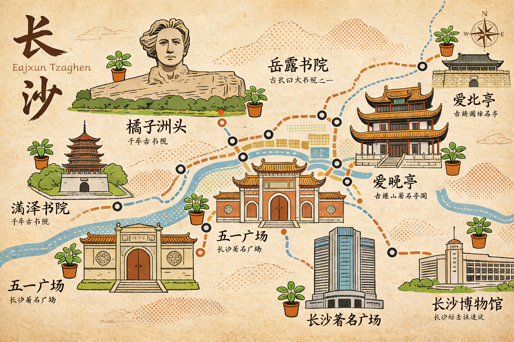
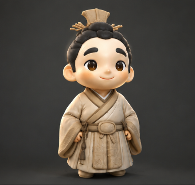

返回 ↩
中文
English
Deutsch
日本語
AR 互动指南
☝️
单指跟随:
伸出食指，模型将跟随您的指尖。
🖐️
张开手掌:
放大模型。
✊
握紧拳头:
缩小模型。
✌️
"V"字手势:
顺时针旋转30°。
🤟
三指手势:
逆时针旋转30°。
开启奇妙之旅
处理中...
古物有灵，待知音唤醒
🎁
抽取文物盲盒
图鉴

文物图鉴
◀

▶
返回
🏺
正在唤醒文物之灵...
解析历史印记...
详情
返回
🎉 唤醒成功！
您唤醒了：
经历
起个名字，让它真正属于你吧~
✨ 生成专属名片 ✨
文物拟人化形态已生成
经历
长按二维码保存专属名片
📸 与TA合影
↺ 返回
❌ 退出
❓ 帮助
🔁 镜像
📍 归位
✋ 无识别
🔄 切换镜头
📷 拍照
🎥 录像